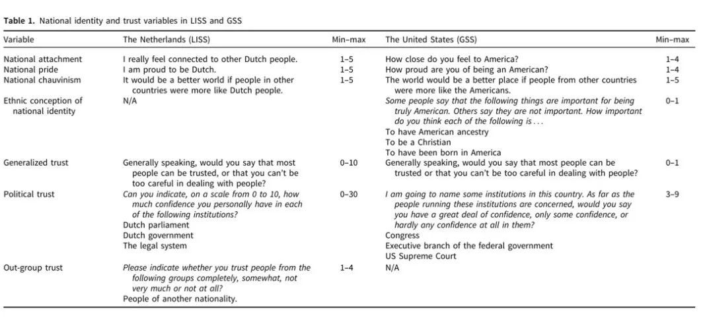
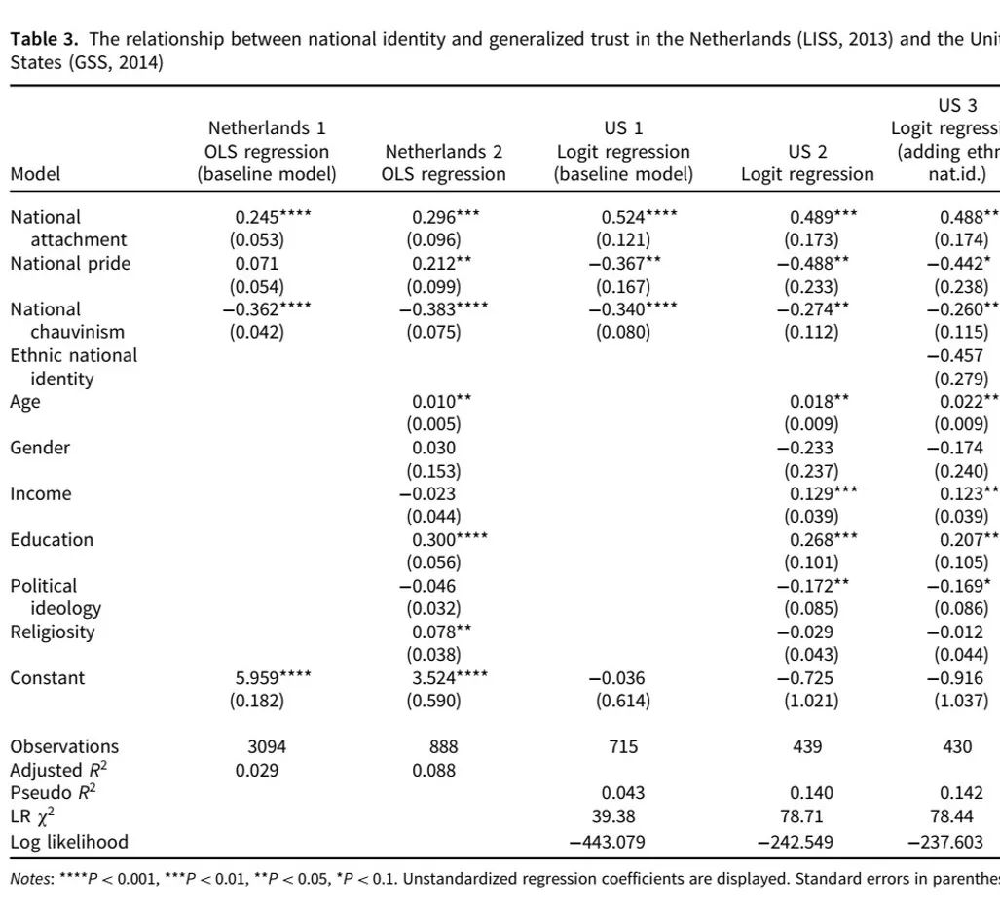
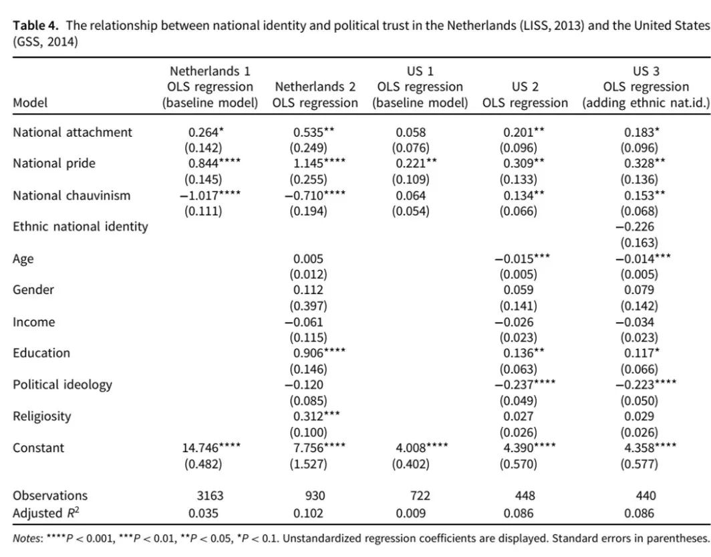

收录于合集
文献来源： ****Gustavsson, G., & Stendahl, L. (2020). National Identity, a Blessing or a Curse? The Divergent Links from National Attachment, Pride, and Chauvinism to Social and Political Trust. European Political Science Review , 1-20.
作者简介： Gina Gustavsson，瑞典乌普萨拉大学政府系副教授，研究领域为政治理论与政治心理学。Ludvig Stendahl，瑞典乌普萨拉大学政府系研究助理。
左起依次为本文作者 Gina Gustavsson 和 Ludvig Stendahl
一、问题的提出
对于现代民族国家而言，国家认同和政治信任都是社会稳定和经济发展的根基。不少学者认为国家认同能够团结群内成员，孕育和谐与信任，最终促进民族国家的健康发展。譬如，“自由民族主义”（liberal nationalism）的支持者总是对这一论断津津乐道。然而最近的实证研究却常常呈现出相互矛盾、令人困惑的结果。譬如一些来自北美的研究认为国家认同和信任呈正相关关系，而针对欧洲地区的研究却得出了负相关关系。另一方面，大多数相关研究都集中在普遍的社会信任方面，却很少有研究直接针对特定的政治信任。这导致我们尚不清楚国家认同的政治后果及其作用机制。因此，作者期望应用更精确的概念操作化方法和更为翔实的数据来推进这一议题的研究。
二、概念操作化
作者认为，国家认同领域文献的相互矛盾至少部分地来源于学者对于这一概念的不同理解。譬如政治学家往往假定国家认同的背后是共同的价值理念，而心理学家则倾向于将国家认同定义为一种具体的、价值无涉的社会认同。在作者看来，完整的国家认同概念至少包括四个维度的内涵。
第一个维度是“国家依恋感”（national attachment），即个体对其所属民族国家和同胞的情感距离。值得注意的是，这一维度并不包含对于认同的评价，而只反映了认同与自我的共鸣程度。第二个维度是“国家自豪感”（national pride），即个体在多大程度上积极评价自己所属的民族国家和同胞。第三个维度是“国家沙文主义”（national chauvinism），即个体在多大程度上认为自己的民族国家优于“他者”。这在本质上是一种比较性的评价。第四个维度是个体对于国家认同的规范性认知，即国家认同的特定内涵究竟是什么。经典政治理论将这一维度区分为强调血缘和领土的族群性国家认同和强调民权和法律的公民性国家认同。
表1 本文概念的操作化
三、机制与假设
群体认同会增进群内成员的相互信任，这似乎是毋庸置疑的。作者认为这其中有两条重要的因果机制。首先是感知相似性（perceived similarity），未知的事物和不熟悉的人会使个体感到危险，而群体认同则反过来通过相似和熟悉来促进信任。其次是积极的认同需求，群体认同的形成很容易，但变更认同却很困难。因此，为了满足褒扬自我的心理需求，个体会倾向于积极评价自己所在的群体。换言之，个体认为群内成员是可以信任的，在一定程度是为了积极地反映自己的诚实品质。
因此，作者提出一系列假设。H1：国家依恋感与社会信任呈正相关关系。H2：国家自豪感与社会信任呈正相关关系。H3：国家沙文主义与社会信任呈负相关关系。H4：国家依恋感与政治信任呈正相关关系。H5：国家自豪感与政治信任呈正相关关系。H6：国家沙文主义与政治信任的关系取决于主流的政治文化宣扬还是反对民族主义。在反民族主义精的英叙事具有政治突出性的背景下，国家沙文主义与政治信任之间存在负相关关系。
四、数据与结果
本文选取了荷兰网络社会科学纵向调查（LISS）和美国综合社会调查（GSS, 2014）作为研究数据。作者通过OLS回归和Logistic回归检验 了上文中的假设。
结果表明：在荷兰的样本中，国家依恋感和国家自豪感均显著地正向影响社会信任和政治信任，而国家沙文主义则显著地负向影响社会信任和政治信任。在美国的样本中，国家依恋感显著地正向影响社会信任，国家沙文主义显著地负向影响社会信任，国家自豪感和国家沙文主义显著地影响政治信任。族群性国家认同对社会信任和政治信任的直接影响均不显著。
表3 国家认同与社会信任
表4 国家认同与政治信任
五、结论
作者认为，国家认同是福是祸取决于我们如何理解这一概念。自由民族主义者往往强调国家认同中的国家依恋，而本文的实证研究确实证明了它和信任之间的强烈联系。但本文也同时发现，即使是族群性的国家认同也没有想象中的那么令人担忧。国家自豪感受到的争议较少，然而民众究竟为何而自豪仍然值得深究。国家沙文主义是国家认同真正的阴暗面，对此，某些政治精英负有很大的责任，也极有可能在未来带来更多的变数。
延伸阅读
[瑞士]安德烈亚斯·威默：《国家建构：聚合与崩溃》，叶江译，上海人民出版社，2019年。
[英]安东尼·史密斯：《民族认同》，王娟译，译林出版社，2017年。
[美]毛里齐奥·维罗里：《关于爱国：论爱国主义与民族主义》，潘亚玲译，上海人民出版社，2016年。
马得勇：《国家认同、爱国主义与民族主义——国外近期实证研究综述》，《世界民族》2012年第3期。
编译：陆屹洲 审校：刘天祥 编辑：康张城
【政文观止Poliview】系头条号签约作者